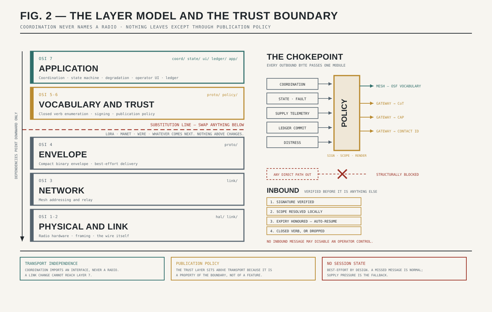
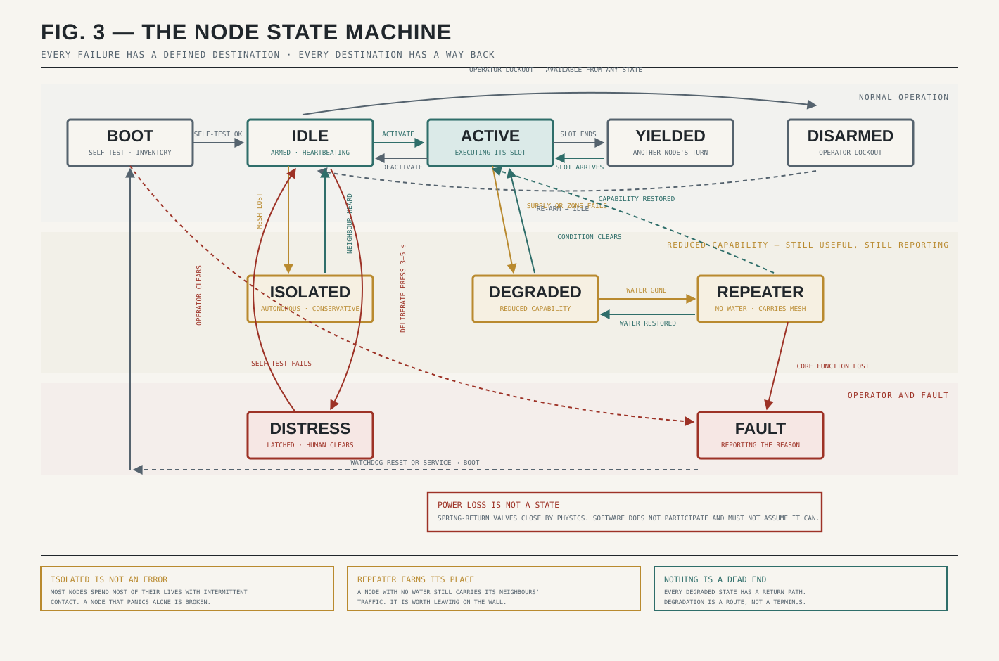
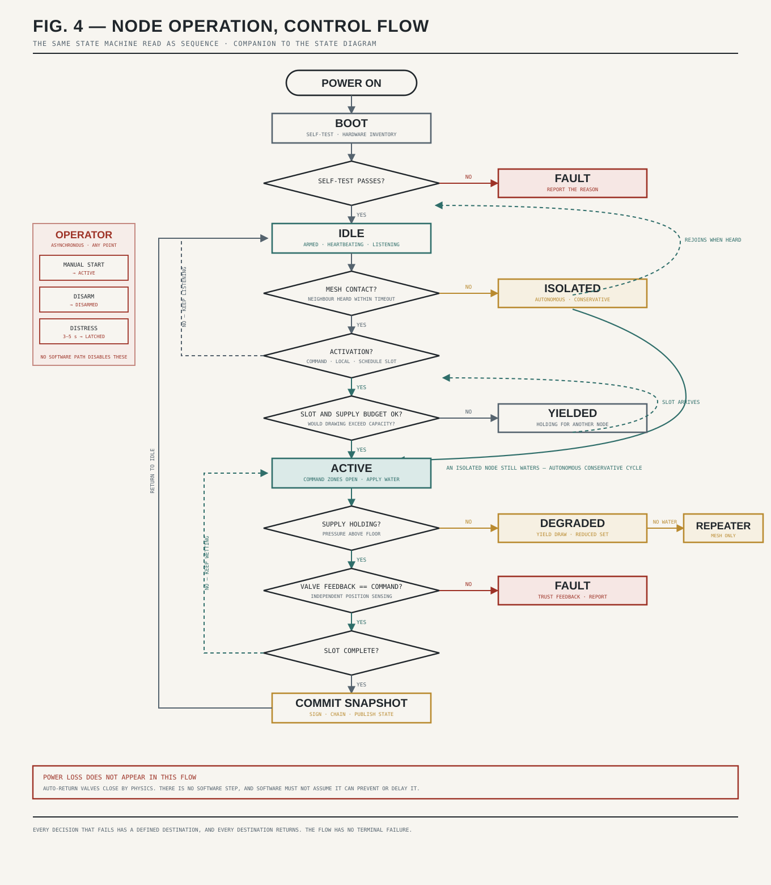

Start at zero
If you already know what a LoRa mesh is, skip to the layer model. This section assumes nothing.
Why do the nodes need to talk at all?
A box on a wall that waters its own roof is useful and needs no network. The moment there are ten boxes on one water main, they have a problem no individual box can see: if they all draw at once the pressure collapses and nobody gets water. Somebody has to take turns.
You could solve that with a central controller, and that is the obvious engineering answer. It is also the wrong one here, for reasons that are about fire rather than about computers — covered below. So the boxes solve it among themselves, which means they have to talk. That conversation is the invention. Everything on this page exists to carry it.
What is a radio link, in one paragraph?
A transmitter turns a message into a pattern of radio waves at some frequency; a receiver tuned to that frequency turns the pattern back into the message. Everything else is tradeoffs. Higher power and lower frequency generally travel further. More data per second generally costs range. And the frequency you are allowed to use at all is decided by your national regulator, not by you.
Which spectrum, and why
Radio spectrum is allocated. Most of it requires a licence, and the licence comes with obligations about who may operate, what may be sent, and when. A system meant to be installed by a homeowner on a Saturday cannot carry any of that.
Unlicensed ISM, and only that
Every jurisdiction reserves bands that anyone may use without a licence, subject to power limits and an obligation to tolerate interference. In North America the reference band is 902–928 MHz; in Europe it is 863–870 MHz; elsewhere it is whatever the regulator says. Transmit power is bounded by the certification of the module as installed, not by the theoretical ceiling of the allocation.
Band and power are properties of the jurisdiction, not of the specification. Build them as configuration with enforced ceilings, not as constants scattered through the code. Some regions impose duty-cycle limits that materially affect protocol design — a heartbeat cadence that is legal in one place is not legal in another.
Why not amateur radio?
Because the amateur service is built around a licensed human operator, and this system is built around an unattended box on a wall. The two are structurally incompatible, and the reasons are regulatory rather than technical:
- Amateur stations require a licensed control operator. A node on a rented lot does not have one.
- Stations must identify by call sign at intervals. A coordination heartbeat is not a station identification.
- Unattended automatic operation is restricted. Continuous unattended operation is exactly what a node does.
- The service bars communications that could reasonably be furnished through another radio service on a regular basis. Unlicensed ISM is that other service, and it is sitting right there.
- Use is prohibited where the operator holds a pecuniary interest, which complicates any commercial or contracted installation.
An amateur-band mode is therefore not a feature to be added later. It is a different regulatory world, and a node operating in it would not be a node built to this specification.
Interoperating with agency radio happens at the network interface — Ethernet or IP at a gateway — never by transmitting on public-safety frequencies. This system's coordination traffic rides its own unlicensed or agency-furnished data layers and never the fire voice nets.
What LoRa trades away
LoRa is a modulation scheme — a particular way of encoding bits into radio waves — designed around one trade: it gives up data rate to buy range and power efficiency. A LoRa link might carry a few hundred bits per second where WiFi carries tens of millions. In exchange it reaches kilometres at a hundred milliwatts and can run for years on a battery.
It is also why the vocabulary has to be small and the envelope has to be tight. A protocol designed for a fat pipe does not survive contact with a few hundred bits per second shared across a neighborhood. The constraint shapes everything above it, which is the subject of the envelope section below.
Above residential class, agency-furnished tactical mesh radios — the hardened interagency class — carry substantially more throughput and are integrated at the data interface rather than embedded. The class is defined by capability, never by vendor: self-forming mesh, IP presentation, environmental qualification.
Why there is no hub
A mesh network is one where every node relays for its neighbors. There is no base station, no router everyone depends on, no single box whose loss takes the network down. A message hops node to node until it arrives, routing around whatever is missing.
The reason this matters here is not elegance. It is that a fire removes things. A hub is a single point of failure, and single points of failure are precisely what a fire finds first — the pole, the shed, the one house with the antenna on it. A mesh degrades by losing nodes; a hub-and-spoke network degrades by losing everything at once.
It also means a node that loses the whole mesh is not broken. It drops to an isolated state and protects its own structure on a conservative cycle. Coordination makes it better. Nothing makes it stop.
Why Meshtastic
Meshtastic is an existing, proven, open-source LoRa mesh firmware with a real community behind it and hardware you can buy today. Reimplementing a mesh routing layer to carry a few dozen tiny messages would be a year of work to arrive somewhere worse. The network layer is a solved problem, so this specification solves the layers above it instead.
The licence travels with the dependency. Meshtastic firmware is GPLv3. Building on it means inheriting GPLv3 obligations for the firmware that links against it. That is a deliberate acceptance, not an oversight, and it is consistent with the project's intent — but it is a real constraint on anyone planning a proprietary derivative, and it should be understood before the first line is written.
The layer model
The build follows a rough OSI layering, deliberately. This is not academic tidiness; it is the mechanism that makes the central architectural promise enforceable. The coordination protocol must remain transport-independent — no revision may bind it to a specific radio. Layering keeps that promise structurally rather than by good intentions: if coordination logic cannot name a radio, it cannot depend on one.
| OSI | OSF layer | What lives here | Module |
|---|---|---|---|
| 1–2 | Physical & link | Radio hardware, framing, the wire itself. LoRa today; anything tomorrow. | hal/ link/ |
| 3 | Network | Mesh addressing and relay. Meshtastic at residential class; agency MANET at tactical class. | link/ |
| 4 | Envelope | The compact binary envelope, fragmentation discipline, best-effort delivery semantics. | proto/ |
| 5–6 | Vocabulary & trust | The closed verb enumeration, quantized field encoding, signing and verification, publication policy. | proto/ policy/ |
| 7 | Coordination & operation | Schedule negotiation, node state machine, degradation behavior, operator interface, ledger. | coord/ state/ ui/ ledger/ app/ |
coord/, the layering has been violated and the violation is the bug — not the radio.Two departures from textbook OSI, both intentional
The trust layer sits at 5–6, above transport, not bolted to the application. Signing and publication policy are properties of the boundary, so they belong where every message must pass regardless of which application feature produced it. That is why policy/ is a chokepoint with no bypass path.
There is no session state in the usual sense. Delivery is best-effort by design; nodes exchange soft-state announcements with expiry rather than maintaining connections. A missed message is a normal event, not an error — and supply-pressure physics is the fallback coordination mechanism when messages do not arrive. A pressure sag is an order every node obeys without being told.

The envelope budget
The wire format is a compact binary envelope sized to the most constrained transport in the family. LoRa mesh payloads live in the two-hundred-byte range. The signature is the large field and it is non-negotiable, because the trust layer rides in the envelope rather than beside it.
Realistic body budget after header and signature: sixty to a hundred bytes. That number is the discipline. Every verb must fit it, and the test suite should fail the build when one does not.
Readings on the wire are single-byte quantized classes, not precise values. Coordination needs "pressure sagging," not 47.3 psi. Full-resolution values stay in the local log, where there is room for them and nobody is paying airtime.
The vocabulary
The inbound command vocabulary is closed and enumerated. A verb outside the enumeration has no representation: it cannot be constructed, transported, or acted on. This is enforced at the type level, not by validating after parsing.
Roughly two dozen verbs, in eight groups. Smallness is a protected property of the protocol, not a version-one limitation — additions go through charter governance.
Four implementation requirements
The verb enum is the dispatch switch. A default: case doing anything but count-and-drop is a bug.
Assert the byte budget in tests. A verb exceeding its maximum encoded size must fail at build or test time, not on a congested mesh at three in the morning.
Round-trip fuzz everything. Encode and decode identity for all verbs, plus decode-arbitrary-bytes-without-crashing. The radio will deliver corrupt frames; the parser must be boring about it.
Golden vectors. Appendix C specifies byte-level examples for HEARTBEAT, ZONE_OPEN, CEASE_OPS, and DISTRESS. These are the conformance fixtures a second implementation tests against first.
Capability bits ride in the heartbeat — supply class, stored water, pump control, detection payload, gateway role. This is how the domain knows what each node is without a registry, and how directive scope filters resolve locally. Get it right early; much depends on it.
Eight invariants
These are not implementation preferences. They are properties an implementation must preserve to be called compliant. Breaking one is a fork, not a contribution.
| # | Invariant | Software consequence |
|---|---|---|
| I-1 | The system operates when fully isolated. No mandatory external network, cloud, account, subscription, or licence server for any core function. | No boot-time network dependency. No feature behind a remote call. Provisioning is local. A node that has never seen the internet is fully functional. |
| I-2 | The inbound command vocabulary is closed and enumerated. | A verb outside the enum cannot be constructed, transported, or acted on. Enforced at the type level, not by validation-after-parse. |
| I-3 | Translation is outbound-only, at the boundary. | The mesh never carries a rich external format. Rendering to external standards happens at a gateway, above coordination, never between nodes. |
| I-4 | The operator physically present prevails. | No software configuration may disable an operator control. No automated lockout of an operator's own resources. Conflicts resolve to the operator — in code, not in documentation. |
| I-5 | No autonomous suppression or targeting. | The software never decides what to attack. It decides when it is this node's turn to wet its own assigned coverage. |
| I-6 | Transport independence. | Coordination imports an interface, never a radio. |
| I-7 | Failure degrades to baseline, never to worse-than-nothing. | Every failure path has a defined, tested destination. Loss of power drives auto-return valves closed by physics; software must not fight it or assume it can prevent it. |
| I-8 | The record is verifiable without trusting the node. | Ledger entries signed and chained. A node that lies must be detectable by someone holding only the published chain. |
The state machine
Every failure has a defined destination, and every destination has a way back. The same behavior is drawn twice below — once as a state diagram, once as a linear sequence, because people read these differently.


The degradation ladder
Each rung is a defined behavior with a test. This table is the graceful-degradation architecture in software terms.
| Failure | Node behavior | Domain behavior |
|---|---|---|
| Mesh lost | → ISOLATED; conservative autonomous cycle | Remaining nodes reschedule around the absence |
| Neighbor vanishes | Drop from neighbor table after timeout | Reschedule; no stall waiting for the missing |
| Supply pressure sags | Yield draw; report PRESSURE | Others sense the same and back off; physics coordinates |
| Water supply fails | → DEGRADED, then REPEATER | Node keeps carrying traffic; coverage gap reported |
| One zone fails — clog, kink, seized valve | Report FAULT with code; continue on remaining zones | Coverage map updates; neighbors may compensate |
| Valve feedback disagrees with command | Trust feedback, report fault | Never report protection that is not physically happening |
| Battery low | Shed load: reduce cycle, prioritize reporting over wetting | Domain sees reduced capability in heartbeat |
| Power lost | Auto-return valves close by physics; nothing to do | Node disappears; domain reschedules |
| Directive missed | Continue local operation, yield via pressure | Best-effort delivery is the design, not a defect |
| Controller crash | Watchdog reset → BOOT → self-test | Brief absence, then rejoin |
Boundaries to design against
These are cheap to respect early and expensive to retrofit. Read them before designing anything.
Life-safety alarm equipment lives inside a listing and certification regime with its own standards and testing bodies. This system deliberately stays outside it: it is protective equipment, not detection-and-notification equipment, and it makes no life-safety claim. Adding features that look like alarm initiation or occupant notification walks the whole project into that regime.
Anything connecting to a potable supply sits under plumbing code and cross-connection control. The inlet gallery check valve is not the backflow prevention device. The required assembly is whatever the authority having jurisdiction requires, installed and tested as that authority requires.
The specification does not and cannot grant anyone permission to transmit. Band, power, duty cycle, and module certification are matters for the installing jurisdiction and the equipment's own certification. Build region parameters as enforced configuration ceilings.
Privacy is architectural, not a policy
The radio carries only short, defined messages about fire defense. Video, audio, and personal data have no representation in the vocabulary at all, which means the system is incapable of transmitting them rather than merely forbidden from doing so. That distinction is the whole point: a policy can be revised, and an absent message type cannot.
Licence inheritance
Hardware designs are published under the CERN Open Hardware Licence family; documentation under Creative Commons; software under an OSI-approved licence with a patent grant. Firmware that links against Meshtastic inherits GPLv3. Know which obligation applies to which artifact before you distribute anything.
Getting started
A contributor who owns nothing can still work productively on the host build alone. When you do buy hardware, buy two radios — a mesh cannot be tested with one.
| Purpose | Item | Note |
|---|---|---|
| Node compute | Any ESP32 development board | Two is meaningfully better than one. |
| Radio | LoRa module for the local ISM allocation | Combined ESP32 + LoRa boards are ideal. Band and power follow the jurisdiction. |
| Everything else | Nothing | Valves, sensors, pumps, enclosure, plumbing: simulated. |
Boards in common use for this class of work include the LILYGO T-Beam, the Heltec Wireless Stick Lite series, and the RAK4631. The specification names classes, not products; any certified module for your allocation qualifies.
Six rules that will save you a month
- Read the software requirements, then the specification's vocabulary appendix. Together they are enough to get through the first several milestones.
- Skim the boundaries above before you design anything. Cheap to respect early, expensive to retrofit.
- Do not start with the radio. Start with the hardware abstraction layer and the state machine on the host build. Radio-first is the most common way embedded projects stall.
- Do not start by optimizing. The node has enormous time budgets by software standards — a valve takes seconds to travel, a schedule slot is minutes. Clarity beats cleverness everywhere in this codebase.
- Write the decision down when you make one. Language, scheduling algorithm, key handling, snapshot cadence. The next implementer's ability to work depends on knowing why, not just what.
- The language is not chosen yet, deliberately. That should be decided and defended by the first serious implementer, not inherited from a document. C or C++ with ESP-IDF is the conservative answer; Rust is credible and buys real safety. Pick one, write the reasoning down, make it a decision of record.